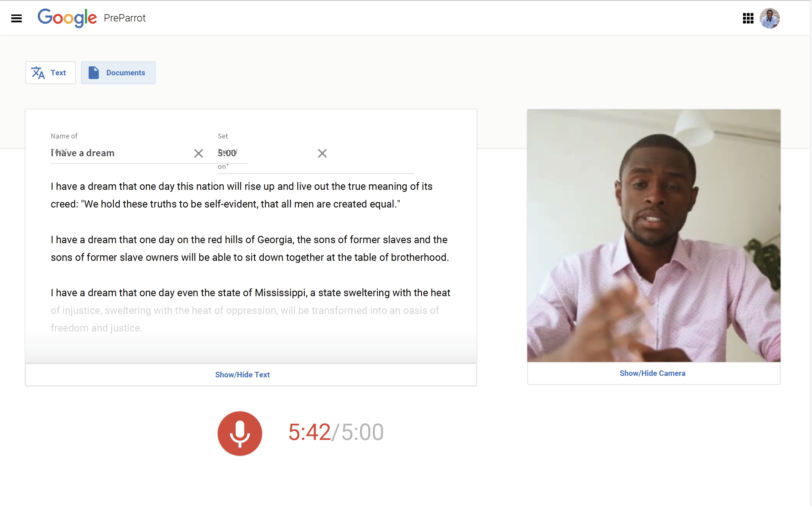

Personal Statement
Recently graduated with a First Class Honours Computer Science degree from the University of Hull. Since then, I have been working as a Software Engineer for Sky UK, building and maintaining Sky's flagship digital products including NOW TV, used by millions of customers across Europe.
Education
The University of Hull · BSc (Hons) Computer Science · Sept 2015 - July 2018
Modules Include:
- Distributed Systems Programming
- Mobile Application Development
- Data Mining and Decison Support Systems
- Communicating and Teaching Undergraduate Computer Science
- Software Engineering
- Software Engineering Principles
Work Experience
Sky UK · Software Engineer · July 2018 - Present
Developing and maintaining a series of micro-services, using Java, that are responsible for providing user token authentication and to access online video content across different platforms and territories. Use of a range of technologies including Dropwizard, Kaftka, Jenkins Kubernetes, and Cassandra.
Personal Projects
PreParrot
PreParrot, is a web application that helps people to memorise, prepare for and deliver speeches, and was built using React, Node.js, Express and Google Cloud Platform’s Speech to Text and Microsoft’s Emotion API during Google's Black Googler Network hackathon in Jan'19.
View Source Code